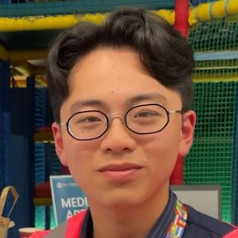

| I'm Marco. For those who can speak and read Vietnamese, my name is Thành Hưng. I came to the UK in January 2024 and accidentally ended up on this page. Just kidding, I'm here and fully prepared with Dr. Andrew Rogers to accompany you through the difficulties you have been facing, such as academic challenges, cultural adaptation, or personal issues.
As an international student, I've experienced similar situations, like feeling lonely and isolated. I know it can be tough. But remember, you're not alone in this. At least you've got us! |  |